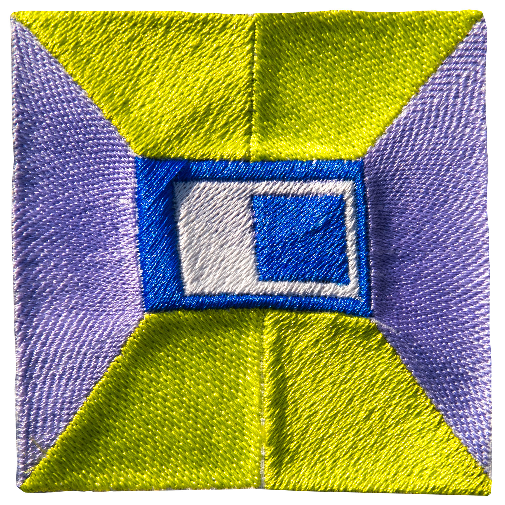
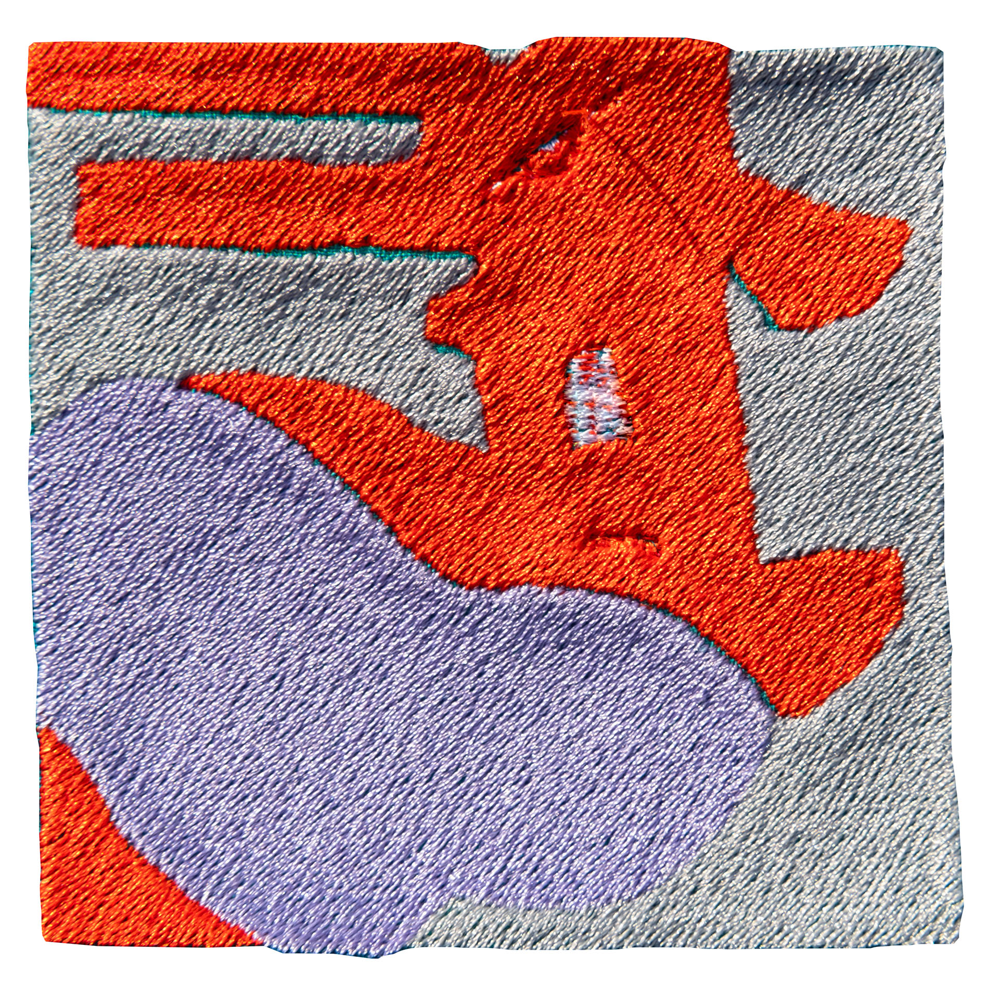
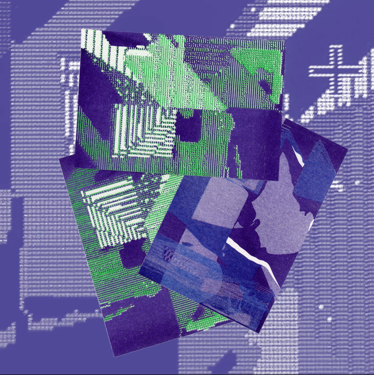

The project experiments with contemporary abstraction and explores conceptual questions: How does generative AI from text to image work when transferred to a traditional fabric medium like embroidery? What input or prompt is required to generate abstraction? How can patterns be processed?


